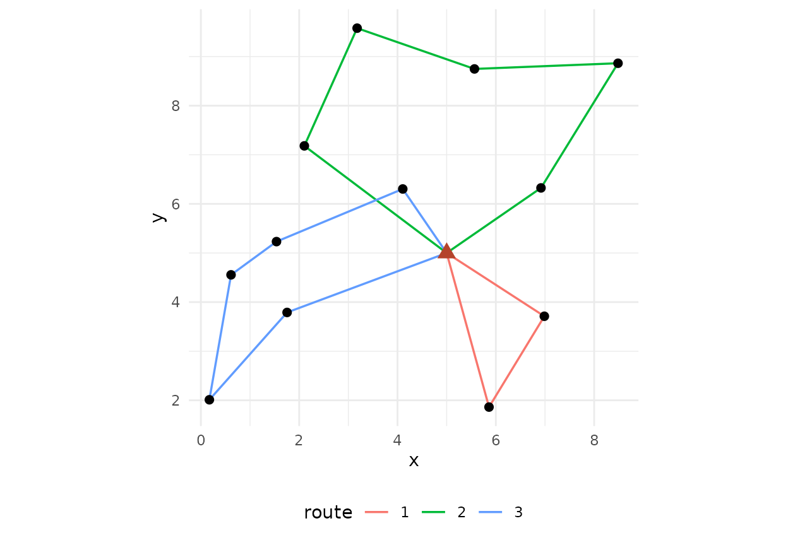
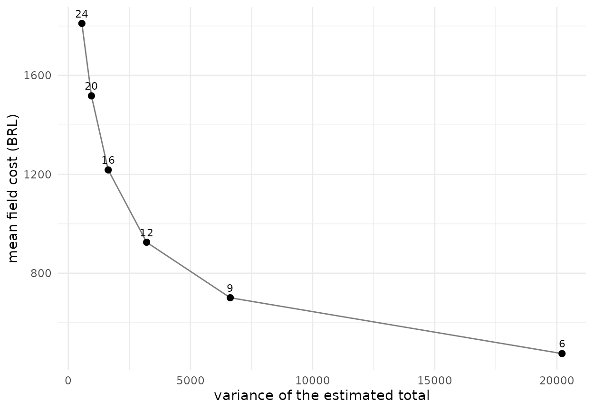

A survey that goes to the field has two costs that textbooks keep
apart: the statistical cost, the variance of the estimator for a given
sample size, and the field cost, the travel between units and the
interviews, which is what the budget actually pays for.
fieldopt puts the two side by side. This vignette walks
through one design from the frame to the cost-variance frontier.
A frame with a depot
The frame is a data frame with one row per sampling unit (a segment, a farm, a census block) and its coordinates. One row is the depot, the office the teams leave from and return to. Here the frame is synthetic: forty segments in a 10 x 10 km square, with a crop area that trends from west to east.
library(fieldopt)
set.seed(2026)
frame <- data.frame(unit = c("depot", paste0("s", 1:40)),
x = c(5, runif(40, 0, 10)), y = c(5, runif(40, 0, 10)))
frame$crop <- c(NA, 20 + 3 * frame$x[-1] + rnorm(40, sd = 2))
head(frame)
#> unit x y crop
#> 1 depot 5.000000 5.0000000 NA
#> 2 s1 6.986735 3.7120180 38.64570
#> 3 s2 5.565305 8.7477840 38.25191
#> 4 s3 1.401400 4.3459731 21.79576
#> 5 s4 2.857233 4.4013678 29.18513
#> 6 s5 5.553690 0.8195683 34.99375Travel and cost
travel_matrix() computes the matrix of travel distances
between all units. With longitude and latitude it uses great-circle
distances in kilometres; with planar coordinates, as here, Euclidean
distances. A matrix computed on a road network (for example with OSRM)
can be passed through the matrix argument and is the better
input when it exists.
m <- travel_matrix(frame, method = "euclidean")
m
#> Travel matrix: 41 units, euclidean (distance); mean off-diagonal 4.886.field_cost_model() turns a routing solution into money:
a cost per unit of travel, a fixed cost per visited unit (access,
setting up) and a cost per interview.
model <- field_cost_model(per_travel = 2, per_unit = 30, per_interview = 10,
interviews_per_unit = 4, currency = "BRL")
model
#> Field cost model (BRL): 2 per travel unit, 30 per visited unit, 10 per
#> interview.Select, route, estimate
select_units() draws a spatially balanced probability
sample with the local pivotal method: the inclusion probabilities are
known, and units close to each other are rarely selected together.
Spatial balance usually lowers the variance of totals of spatially
structured variables; it also spreads the units over the territory,
which is exactly what makes the field work longer. Making that tension
explicit is the point of the package.
units <- frame[frame$unit != "depot", ]
s <- select_units(units, n = 12)
s[s$sampled, c("unit", "x", "y", "pi")]
#> Warning: Unknown or uninitialised column: `sampled`.
#> Sample of 0 units from 12 by "lpm".
#> # A tibble: 12 × 4
#> unit x y pi
#> <chr> <dbl> <dbl> <dbl>
#> 1 s1 6.99 3.71 0.3
#> 2 s2 5.57 8.75 0.3
#> 3 s12 6.92 6.33 0.3
#> 4 s14 8.49 8.86 0.3
#> 5 s15 1.54 5.23 0.3
#> 6 s19 3.18 9.58 0.3
#> 7 s20 0.173 2.01 0.3
#> 8 s24 0.614 4.56 0.3
#> 9 s27 4.11 6.30 0.3
#> 10 s32 1.75 3.79 0.3
#> 11 s35 5.86 1.86 0.3
#> 12 s37 2.10 7.18 0.3route_fieldwork() routes the field work from the depot
through the selected units. Without limits it returns one tour; with a
maximum length or a maximum number of stops per route, it splits the
work into routes, one per team or per day. The solver is a GRASP
heuristic with local search and an optimal split of the tour, and
reports the gap to a lower bound so that the quality of the solution is
visible.
r <- route_fieldwork(m, units = s$unit[s$sampled], depot = "depot",
max_stops = 5, cost_model = model)
r
#>
#> ── Field routes ────────────────────────────────────────────────────────────────
#> 3 routes from "depot" through 12 units: total travel 38.74 distance (lower
#> bound 28.03, gap 38.2%).
#> Route 1 (13.93): s27 > s15 > s24 > s20 > s32
#> Route 2 (17.02): s37 > s19 > s2 > s14 > s12
#> Route 3 (7.786): s1 > s35
#> Cost (BRL): travel 77.47 + units 360 + interviews 480 = 917.5.
autoplot(r)
design_variance() gives the Horvitz-Thompson estimate of
the total of crop and its variance by the local-mean
estimator of Grafström and Schelin (2014), which suits spatially
balanced samples and needs no joint inclusion probabilities. The
variance the same sample size would give under simple random sampling is
shown for comparison.
design_variance(s, y = "crop")
#> # A tibble: 1 × 8
#> total variance se cv variance_srs n N variance_method
#> <dbl> <dbl> <dbl> <dbl> <dbl> <int> <int> <chr>
#> 1 1265. 2175. 46.6 0.0369 7079. 12 40 local-mean
sum(frame$crop, na.rm = TRUE)
#> [1] 1241.481The cost-variance frontier
A design is chosen by its sample size, its routing limits and its
cost model. cost_variance_frontier() repeats the
select-route-price-estimate cycle for a grid of sample sizes and returns
the mean cost and the mean variance at each size: the frontier a survey
planner faces.
f <- cost_variance_frontier(frame, depot = "depot", cost_model = model,
n_grid = c(6, 9, 12, 16, 20, 24), y = "crop",
method = "euclidean", max_stops = 5,
n_rep = 8, iterations = 60)
f
#> # A tibble: 6 × 8
#> n cost_mean cost_sd travel_mean routes_mean variance_mean cv_mean n_rep
#> * <dbl> <dbl> <dbl> <dbl> <dbl> <dbl> <dbl> <dbl>
#> 1 6 472. 6.62 26.0 2 19563. 0.107 8
#> 2 9 699. 4.08 34.5 2.12 6200. 0.0630 8
#> 3 12 925. 5.24 42.7 3 2972. 0.0434 8
#> 4 16 1222. 7.82 51.2 4 1500. 0.0311 8
#> 5 20 1518. 4.01 58.9 4.62 1013. 0.0257 8
#> 6 24 1812. 2.52 66.2 5.25 542. 0.0187 8
autoplot(f)
The frontier makes two questions answerable with numbers: how much
the next unit of precision costs in the field, and how much a different
field organisation (more teams, longer days, a closer depot) would
change that price. The vignettes routing-teams and
frames-and-allocation take those questions up.
References
Cochran, W. G. (1977). Sampling Techniques, third edition. Wiley.
Grafström, A., Lundström, N. L. P. and Schelin, L. (2012). Spatially balanced sampling through the pivotal method. Biometrics, 68(2), 514–520.
Grafström, A. and Schelin, L. (2014). How to select representative samples. Scandinavian Journal of Statistics, 41(2), 277–290.
Prins, C. (2004). A simple and effective evolutionary algorithm for the vehicle routing problem. Computers & Operations Research, 31(12), 1985–2002.